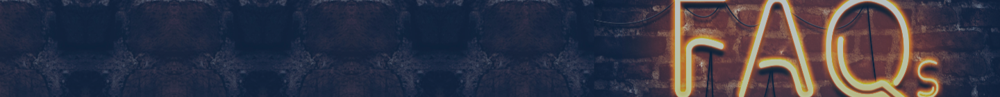

Frequently Asked Questions
Cyber Swachhta Kendra (CSK) is a Botnet Cleaning and Malware Analysis Centre operated by the Government of India under MeitY. It provides free tools to detect and remove malware/botnets from citizens' devices, helping create a safer Indian cyberspace.
CSK detects botnet infections in India, notifies victims, provides free tools to remove malware, and conducts malware analysis. It collaborates with ISPs, antivirus vendors, and academia to ensure a clean internet ecosystem for Indian users.
It was started to address the rising threat of botnets and malware infections in India. The initiative aims to proactively protect Indian citizens' devices and data, and to reduce the number of infected systems contributing to global cybercrime activities.
A "bot" (short for robot) is malware that lets an attacker control a computer remotely without the owner's knowledge. Groups of infected computers form a "botnet" used for spam, DDoS attacks, and data theft.
Agencies reporting to CSK include Internet Service Providers (ISPs), antivirus companies, academic institutions, government bodies, and international cybersecurity organizations that share threat intelligence about botnets and malware in India.
Besides CSK, resources from CERT-In (Indian Computer Emergency Response Team), National Cyber Security Policy, and various cybersecurity awareness portals are available. These provide guidelines, advisories, and tools to help citizens stay safe online.
While free antivirus tools help, CSK provides a centralized, government-backed service tailored to Indian threat landscapes. It proactively identifies infected systems via ISP data and provides specialized cleaning tools that many commercial products may miss.
The service is completely free for citizens. The operational cost is borne by the Government of India through MeitY as part of the Digital India initiative to ensure a safe and secure cyberspace for all users in the country.
Bots are used by cybercriminals because they allow mass automation of malicious activities. One attacker can control thousands of infected machines simultaneously, making attacks like spam, DDoS, and credential theft far more powerful and difficult to trace.
A Botnet is a network of computers infected with malware and controlled by an attacker without the owners' knowledge. These networks are used for sending spam, launching DDoS attacks, mining cryptocurrency, and stealing personal information.
Botnets enter via malicious email attachments, infected downloads, drive-by downloads, or unpatched software vulnerabilities. Once inside, they slow down your computer, consume bandwidth, steal your data, and use your device to attack others silently in the background.
Malware (malicious software) is any software designed to cause harm to a computer, server, or network. Types include viruses, worms, trojans, ransomware, spyware, adware, and bots. Malware can steal data, encrypt files, or give attackers remote control of devices.
Your ISP may have detected suspicious traffic from your IP address suggesting a botnet infection. You were directed here so you can download the free cleaning tool, scan your device, and remove any detected malware to secure your system and protect others online.
CSK receives threat intelligence from trusted partner agencies and ISPs who monitor network traffic for known botnet Command & Control (C&C) signatures. When your IP communicates with a known C&C server, the system flags your device as potentially infected.
No. CSK only collects information necessary to detect and clean infections. Personal identifiable information is not collected or shared. The focus is entirely on identifying infected IPs and helping users clean their devices safely and anonymously.
Common infection paths include:
- Clicking malicious email attachments or links
- Downloading pirated software or media
- Visiting compromised websites
- Using unpatched or outdated operating systems
- Connecting infected USB drives
- Installing fake browser plugins or apps
Signs of infection include sudden slowdowns, high CPU/RAM usage, unexpected pop-ups, programs crashing, unknown processes in Task Manager, high network activity when idle, browser redirects, or your antivirus being disabled unexpectedly.
Keep your OS and software updated, use a reputable antivirus, avoid clicking suspicious links, never download pirated content, use strong passwords, enable two-factor authentication, and regularly scan your system using trusted tools provided by CSK.